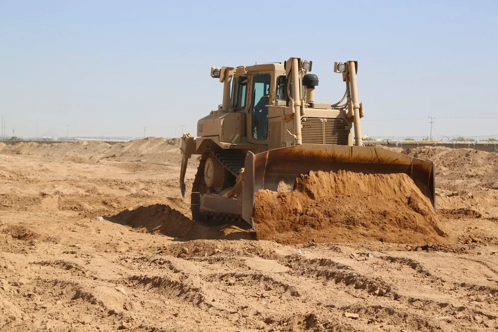

Le paradoxe est simple : disposer de ressources ne garantit pas d'obtenir le résultat politique recherché.
Repère pédagogique : les mots soulignés en pointillés s’ouvrent au toucher ou au clavier.
Schéma interactif · Comprendre la puissance
Des ressources au résultat : où se joue la différence ?
Suivez les trois étapes pour voir pourquoi posséder des moyens ne garantit pas d’atteindre son objectif.
1. Les ressources : une armée, de l’argent, des alliances ou une influence culturelle donnent des capacités d’action. Ce sont des moyens disponibles, pas encore un résultat politique.
2. Les actions : un État choisit comment utiliser ses ressources — intervention, aide, sanctions ou négociations. Le choix doit correspondre à l’objectif poursuivi.
3. Les résultats : ils dépendent aussi des décisions des autres acteurs, des institutions et du contexte local. En Afghanistan, par exemple, l’aide et le soutien militaire n’ont pas empêché l’effondrement du gouvernement en 2021. Source [9]
THOT · Comparer les cas
Trois situations, trois limites à la puissance
Le point de vue retenu est celui des États-Unis, avec leurs partenaires dans les cas concernés. Distinguez les acteurs en présence, l’objectif de cette intervention, ses moyens et le résultat observé.
Étude affichée : Afghanistan.
Gardez un cas historique, puis choisissez l’autre. L’Iran reste consultable seul : ses informations récentes demandent une actualisation séparée.
Les périodes, les acteurs et les objectifs diffèrent. Cette lecture croisée aide à distinguer moyens et résultats ; elle ne mesure pas une efficacité commune et ne classe pas les deux situations.
| Critère |
|---|
Afghanistan
- Acteurs en présence
- Les États-Unis et leurs partenaires soutiennent le gouvernement et les forces afghanes face aux talibans.
- Objectif de l’acteur de référence
- Pour les États-Unis et leurs partenaires : renverser le régime taliban en 2001, puis soutenir des institutions afghanes capables de gouverner.
- Moyens mobilisés
- Intervention militaire, aide et accompagnement des forces afghanes. Le Congrès américain a affecté 88,3 milliards de dollars au fonds ASFF pour les former, les équiper et les soutenir entre 2002 et 2021. Source [10]
- Résultat observé et limites
- Le gouvernement soutenu s’effondre en 2021 et les talibans reprennent Kaboul. Les institutions ne perdurent pas ; le SIGAR identifie plusieurs facteurs interdépendants.
Ce que le cas montre : les moyens militaires et financiers n’ont pas garanti la pérennité du gouvernement. Le rapport du SIGAR décrit plusieurs facteurs, plutôt qu’une cause unique. Source [9]
Iran
- Acteurs en présence
- Les États-Unis exercent des pressions sur l’Iran, État souverain doté de ses propres institutions, d’un territoire et de capacités d’action régionales.
- Objectif de l’acteur de référence
- Pour les États-Unis : obtenir des concessions politiques dans un contexte de désaccords, notamment sur le nucléaire et les relations régionales.
- Moyens mobilisés
- Sanctions, pressions économiques, mesures militaires et négociations. Les exportations iraniennes de pétrole brut et de condensats sont passées de plus de 2,5 millions de barils par jour en 2017 à moins de 0,4 million en 2020. L’EIA cite les sanctions et le recul de la demande lié à la pandémie. Source [17]
- Résultat observé et limites
- Les pressions ont des effets économiques rapportés ; au 21 octobre 2026, aucun accord n’est accepté par les deux parties.
Ce que le cas montre : exercer une pression peut produire des conséquences sans entraîner automatiquement les concessions recherchées. Cette situation reste évolutive. Source [12] · Source [13]
Daech
- Acteurs en présence
- Les États-Unis, la coalition internationale et des forces partenaires locales combattent Daech, organisation terroriste non étatique, en Irak et en Syrie.
- Objectif de l’acteur de référence
- Pour la coalition et ses partenaires : mettre fin au contrôle territorial de Daech et réduire ses capacités d’action.
- Moyens mobilisés
- Opérations d’une coalition internationale et de forces partenaires locales. En 2019, elle réunissait 80 membres. Source [18]
- Résultat observé et limites
- Le dernier réduit territorial de Daech en Syrie est repris en 2019 ; la perte de ce territoire ne signifie pas la disparition de l’organisation, dont des réseaux persistent.
Ce que le cas montre : la fin du contrôle territorial constitue un résultat majeur, sans signifier à elle seule la disparition de l’organisation. Source [14] · Source [16]
La puissance : posséder des moyens ou obtenir des résultats ?
La Capacité d’un acteur à mobiliser des ressources pour influencer une situation et atteindre un objectif. d’un État repose sur son territoire, sa richesse, son armée, sa population, ses alliances et son influence culturelle. Ces ressources rendent l’action possible sans garantir le résultat recherché. [1]
Puissance et Exercice concret d’une influence ou d’une autorité dans une relation avec d’autres acteurs. sont liés, mais distincts : la première désigne une capacité d’action ; le second, son exercice dans une relation avec d’autres acteurs. [2]
Contraindre, attirer, combiner
Joseph Nye distingue le Moyens de contrainte, comme la force militaire ou les sanctions économiques. (contrainte militaire ou économique), le Influence obtenue en attirant ou en convainquant, par la culture, les idées ou la diplomatie. (influence par l’attraction) et le Combinaison adaptée de moyens de contrainte et d’influence. (combinaison adaptée de ces moyens). [3] [4]
Une sanction peut donc faire pression sans obtenir la concession attendue : tout dépend du coût que l’adversaire attribue à la résistance.
La souveraineté westphalienne : pourquoi le plus puissant ne commande-t-il pas aux autres ?
Les traités de Westphalie, signés en 1648, sont devenus une référence pour penser un système international composé d’États Les États disposent en principe d’une autorité politique indépendante sur leur territoire.. L’« Modèle d’un système international composé d’États souverains, sans autorité supérieure commune. » désigne un modèle dans lequel aucun État n’est, par principe, le supérieur hiérarchique des autres. [5]
La puissance militaire ou économique ne donne donc pas automatiquement le droit de gouverner un autre pays. Cette idée relève du statut politique et juridique des États, pas de l’égalité de leurs moyens.
Quatre dimensions de la souveraineté
Stephen D. Krasner distingue quatre dimensions de la souveraineté : l’exclusion des autorités extérieures des structures d’autorité d’un territoire (westphalienne), la reconnaissance mutuelle des États (juridique internationale), l’organisation de l’autorité politique et l’exercice effectif du contrôle (intérieure), et la capacité à contrôler les flux transfrontaliers (d’interdépendance). Ces dimensions distinguent notamment autorité et contrôle effectif. [6]
Elles peuvent diverger : un État reconnu peut ne pas contrôler tout son territoire. La souveraineté n’empêche pas non plus les pressions ou les interventions ; elle ne garantit pas l’invulnérabilité.
Un modèle utile, mais à nuancer
Les traités de 1648 n’ont pas créé à eux seuls le système international moderne : l’historien Andreas Osiander invite à se méfier du « mythe westphalien ». [8]
La Charte des Nations unies affirme l’égalité souveraine des États et encadre le recours à la force, notamment par les règles de légitime défense et les décisions du Conseil de sécurité. Cette égalité est juridique, non militaire. [7]
L'Afghanistan : gagner des batailles sans gagner la paix
Après le renversement du régime taliban en 2001, les États-Unis et leurs partenaires soutiennent des institutions et des forces afghanes. En août 2021, le gouvernement s’effondre et les talibans reprennent Kaboul. Le SIGAR a examiné les facteurs de cet échec.
Frise interactive · 2001–2021
De l’intervention au retour des talibans
Parcourez six repères pour voir comment deux décennies d’intervention et de reconstruction se sont achevées par l’effondrement rapide du gouvernement afghan.
Étape affichée : L’accord de Bonn.
Un nouvel ordre politique se met en place
Le 5 décembre 2001, les accords de Bonn ouvrent le processus de formation d’un nouveau gouvernement. Hamid Karzai est désigné à la tête de l’administration intérimaire. Source [9]
La reconstruction s’étend sur deux décennies
Les États-Unis et leurs partenaires cherchent à soutenir un État et des forces de sécurité capables de durer. Le bilan du SIGAR relève des faiblesses institutionnelles persistantes et des choix qui ont réduit les chances de pérenniser ces acquis. Source [9]
Le retrait est annoncé
Le 14 avril 2021, le président Joe Biden annonce que le retrait des forces américaines sera achevé avant le 11 septembre. La date de fin sera ensuite avancée au 31 août. Source [10]
Les forces américaines quittent Bagram
Le 2 juillet 2021, les forces américaines achèvent leur retrait de la base aérienne de Bagram, principal centre militaire des États-Unis dans le pays. Le retrait logistique s’accélère alors que l’avancée talibane progresse. Source [10]
Les capitales provinciales tombent
Le 6 août, les talibans prennent Zaranj, première capitale provinciale à tomber. Kandahar et Hérat suivent les 12 et 13 août, accélérant la désagrégation des forces gouvernementales. Source [10]
Le gouvernement s’effondre, l’évacuation se termine
Le 15 août, Ashraf Ghani quitte le pays et les talibans prennent Kaboul. Le dernier avion militaire américain quitte l’aéroport le 31 août. Source [10]
Quelques images pour situer ces étapes



Images DVIDS identifiées « PUBLIC DOMAIN » sur leurs notices. Leur présence ne signifie pas que le ministère américain de la Guerre approuve THOT. Avis demandé par DVIDS : “The appearance of U.S. Department of War (DoW) visual information does not imply or constitute DoW endorsement.” Conditions d’utilisation DVIDS.
- 5 décembre 2001 — les accords de Bonn ouvrent le processus de formation d’un nouveau gouvernement afghan. [9]
- 2002–2021 — les États-Unis et leurs partenaires soutiennent le développement d’institutions et de forces de sécurité afghanes ; le SIGAR relève des faiblesses persistantes. [9]
- 14 avril 2021 — Joe Biden annonce que le retrait américain sera achevé avant le 11 septembre ; la date est ensuite avancée au 31 août. [10]
- 2 juillet 2021 — les forces américaines achèvent leur retrait de la base de Bagram. [10]
- 6–13 août 2021 — Zaranj tombe le 6 août, puis Kandahar et Hérat les 12 et 13 août. [10]
- 15–31 août 2021 — Kaboul tombe le 15 août ; le dernier avion militaire américain quitte l’aéroport le 31 août. [10]
Pourquoi le gouvernement s’est-il effondré ?
En 2022, le SIGAR identifie six facteurs qui se sont renforcés mutuellement : [9]
- Le gouvernement afghan a mal anticipé les conséquences du retrait américain.
- Son exclusion des premières négociations entre Washington et les talibans a affaibli sa position.
- Les responsables afghans défendaient l’intégration des talibans aux institutions existantes, sans parvenir à un compromis politique.
- Les talibans, convaincus de pouvoir l’emporter militairement, ont refusé les concessions.
- Le pouvoir très centralisé autour d’Ashraf Ghani a fragilisé la prise de décision.
- La corruption et le manque de légitimité ont affaibli durablement les institutions.
Gagner des combats, bâtir un État
Le SIGAR conclut que l’objectif de bâtir des institutions afghanes stables et responsables n’a pas été atteint : l’aide extérieure n’a pas créé des institutions capables de durer sans elle. [9]
Le cas invite à distinguer victoire tactique (réussir une opération), réussite stratégique (atteindre l’objectif politique) et stabilité durable (faire durer le résultat). La première ne garantit pas les deux autres.
L'Iran : pourquoi la pression américaine ne suffit-elle pas toujours ?
L’Iran est un État doté de ses propres institutions et d’une position régionale importante. Le détroit d’Ormuz, situé près de l’Iran, lui donne un levier géographique. En 2024, environ 20 millions de barils de pétrole et d’autres liquides pétroliers y transitaient chaque jour — près de 20 % de la consommation mondiale. Ces chiffres décrivent 2024 ; ils ne mesurent pas la situation actuelle. [11]
La pression produit-elle les concessions attendues ?
Oui, les pressions américaines ont des effets économiques. Le 14 octobre 2026, Reuters rapportait une dégradation monétaire et une inflation élevée en Iran, tout en signalant que le gouverneur de la Banque centrale contestait l’idée d’un effondrement économique. [12]
Mais une pression importante ne garantit pas un accord. Le 20 octobre, Reuters rapportait que Téhéran posait des conditions à la reprise des discussions avec Washington, tandis que des désaccords persistaient sur les sanctions, les hostilités régionales et le nucléaire. Au 21 octobre 2026, aucun accord n’était accepté par les deux parties. [13]
Cette situation peut évoluer. Elle montre qu’il faut distinguer les conséquences d’une pression et l’obtention des concessions recherchées : chaque acteur évalue les coûts de la résistance et ceux du compromis.
Daech : pourquoi une victoire militaire ne fait-elle pas disparaître une organisation ?
Une organisation clandestine peut perdre son territoire tout en conservant des membres et des réseaux. Sa défaite territoriale n’équivaut donc pas nécessairement à sa disparition.
La fin du « califat » territorial
À partir de 2014, Daech contrôle de vastes territoires en Irak et en Syrie. Le 23 mars 2019, une coalition soutenue par des forces locales reprend le dernier territoire tenu par l’organisation en Syrie. Le CENTCOM souligne le rôle de ces partenaires et précise que le combat contre les survivances de Daech continue. [14]
Dès 2019, l’ONU alerte sur la persistance de réseaux affiliés. Son rapport de 2026 indique que Daech continue de s’adapter aux opérations antiterroristes. [15] [16]
Trois résultats à distinguer
- Reprendre le territoire met fin à son contrôle par l’organisation.
- Réduire ses capacités limite ses possibilités d’attaque, de financement et de recrutement.
- Empêcher sa reconstitution demande aussi des mesures de sécurité, de justice et de stabilisation.
Ce qu'il faut retenir
- La puissance et le pouvoir sont liés, mais distincts. La puissance renvoie à des capacités ; le pouvoir implique leur exercice dans une relation entre acteurs.
- La souveraineté westphalienne concerne les structures d'autorité des États. Elle ne garantit ni leur invulnérabilité ni leur capacité matérielle à résister à toute pression extérieure.
- La victoire militaire n'est pas toujours une réussite politique. L'Afghanistan, l'Iran et la lutte contre Daech illustrent chacun, dans un contexte différent, les limites possibles de la coercition.
Encore curieux ?

THOT · Les repères scientifiques
Ce qu’on sait, ce qui reste à discuter
Ce qu’on sait
- La Charte des Nations unies affirme l’égalité souveraine de ses membres. C’est un principe juridique ; il ne signifie pas une égalité de moyens militaires ou économiques. [7]
Ce qui fait débat
Une discussion historiographique sur la manière de raconter la souveraineté.
- Osiander critique le récit qui ferait des traités de 1648 l’acte de naissance, à eux seuls, du système moderne d’États souverains. Le débat porte sur cette interprétation historique, pas sur l’existence des traités. [8]
Sources et références
Lire nos sources. Sources primaires : documents, données ou recherches originales. Sources secondaires : analyses et synthèses. Ressources complémentaires : notices, dossiers et presse. Ces catégories décrivent les documents ; elles ne garantissent pas leur fiabilité. Une notice ne remplace pas la lecture du document qu’elle décrit.
Chaque référence renvoie au document ou à la page correspondant au numéro indiqué.
- Source secondaire · glossaire universitaire Géoconfluences, ENS de Lyon, « Puissance », glossaire de géographie. Consulter ↗
- Source secondaire · glossaire universitaire Géoconfluences, ENS de Lyon, « Pouvoir », glossaire de géographie. Consulter ↗
- Source secondaire · ouvrage, accès par notice Joseph S. Nye, Soft Power: The Means to Success in World Politics, New York, PublicAffairs, 2004. Notice bibliographique de la BnF. Consulter ↗
- Source secondaire · ouvrage, présentation universitaire Joseph S. Nye, The Future of Power, New York, PublicAffairs, 2011. Présentation universitaire. Consulter ↗
- Source secondaire · glossaire universitaire Géoconfluences, ENS de Lyon, « Westphalien (État, diplomatie, frontière…), post-westphalien », glossaire de géographie. Consulter ↗
- Source secondaire · travaux de recherche Stephen D. Krasner, Sovereignty: Organized Hypocrisy, Princeton University Press, 1999 ; « Rethinking the Sovereign State Model », Review of International Studies, vol. 27, no 5, 2001, p. 17-42. Consulter ↗ Texte original : définitions p. 19–21. Lire l’article de Krasner (PDF)
- Source primaire · texte juridique Organisation des Nations unies, Charte des Nations unies, 1945, articles 2, 42 et 51. Consulter ↗ Voir également le chapitre VII (articles 42 et 51).
- Source secondaire · analyse historiographique Andreas Osiander, « Sovereignty, International Relations, and the Westphalian Myth », International Organization, vol. 55, no 2, 2001, p. 251-287. Consulter ↗
- Source primaire · rapport institutionnel d’enquête Special Inspector General for Afghanistan Reconstruction (SIGAR), Why the Afghan Government Collapsed, rapport 23-05-IP, novembre 2022. Consulter ↗
- Source primaire · rapport institutionnel Special Inspector General for Afghanistan Reconstruction (SIGAR), Quarterly Report to the United States Congress, 30 octobre 2021. Consulter ↗ Accès alternatif au même rapport : copie conservée par ecoi.net (Croix-Rouge autrichienne), p. 18 pour les 88,3 milliards ASFF. Pour Bagram : SIGAR, Why the Afghan Security Forces Collapsed, 23-16-IP, février 2023, p. 4 (p. 11 du PDF) : exemplaire institutionnel GovInfo. L’accès automatisé au site SIGAR d’origine est indisponible lors du contrôle du 26 octobre 2026 ; cela ne prouve pas une suppression.
- Source primaire · données institutionnelles U.S. Energy Information Administration (EIA), « Amid regional conflict, the Strait of Hormuz remains critical oil chokepoint », Today in Energy, 16 juin 2025, données relatives à 2024. Consulter ↗
- Ressource complémentaire · dépêche de presse Reuters, « Iran's central bank governor dismisses claims of economic collapse amid US blockade », 14 octobre 2026. Consulter ↗
- Ressource complémentaire · dépêche de presse Reuters, « Iran tells Pakistan army chief no talks with Washington until demands are met », 20 octobre 2026. Consulter ↗
- Source primaire · déclaration militaire U.S. Central Command (CENTCOM), « Statement from Gen. Joseph Votel on liberating the last territory held by Daesh », 23 mars 2019. Consulter ↗
- Source primaire · compte rendu institutionnel Organisation des Nations unies, Conseil de sécurité, « Islamic State in Iraq and Levant Still Global Threat… », communiqué SC/13931, 27 août 2019. Consulter ↗
- Source primaire · rapport et présentation institutionnels Organisation des Nations unies, Secrétaire général, Vingt-troisième rapport sur la menace posée par l'EIIL (Daech), document S/2026/638, 31 juillet 2026 ; présenté au Conseil de sécurité le 5 août 2026. Consulter ↗ Compte rendu de la présentation ↗.
- Source primaire · données institutionnelles U.S. Energy Information Administration, « Iran’s crude oil production fell to an almost 40-year low in 2020 », Today in Energy, 12 août 2021. Consulter ↗
- Source primaire · déclaration diplomatique U.S. Department of State, « Joint Statement by the Political Directors of the Global Coalition to Defeat ISIS », 2019. Consulter ↗ Accès alternatif institutionnel : version française de la même Feuille de route, ministère de l’Europe et des Affaires étrangères (PDF). La page d’archives américaine refuse l’accès automatisé lors du contrôle ; la référence d’origine est conservée.
Note éditoriale : cette analyse des relations entre les États-Unis et l'Iran se fonde sur les informations disponibles au 21 octobre 2026. Cette partie doit être actualisée lorsque les conditions diplomatiques ou militaires changent.